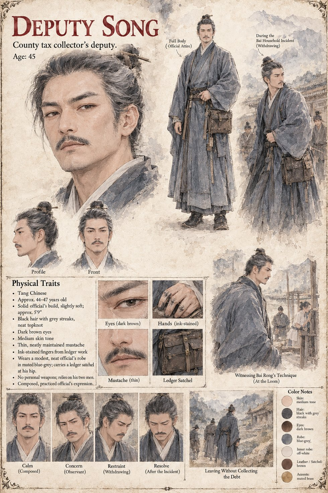

Deputy Song
Deputy to the county tax collector · eleven years collecting in the valley · 45 by his sheet
Has collected from the valley for eleven years and prides himself, not without reason, on never once having needed to raise a hand to do it: reputation, in his own careful accounting, is worth considerably more than any single household's furniture. He comes to the Bai household on the ninth day after the mountain, four days later than the debt strictly allowed, with two men, drinks the widow's tea as he always does, names the sum, and gives the household until sundown to produce it or surrender the two remaining goats and the loom.
Then his junior reaches for the loom and is put on the floor in about four seconds by the shepherd in the doorway, and the deputy takes his men and leaves without goats, loom or sum. He describes it to the magistrate, carefully and not entirely truthfully, as a tactical withdrawal, and tells the story exactly four times before deciding to stop, because each telling made the listener look a little less at a man who had shown restraint and a little more at a man who had run. The sheet gives him a modest official's robe in blue-grey, a ledger satchel at the hip, ink-stained fingers and no weapon but his two men, and shows him leaving without collecting the debt; its age and build are its own.
Appears In

Related Subjects


Related Records

The tax collector's junior reaches for the loom and is put on the ground in about four seconds by Bai Rong, moved, as the manuscript has it, the way a door is moved; Deputy Song and a second man watch from the gate.